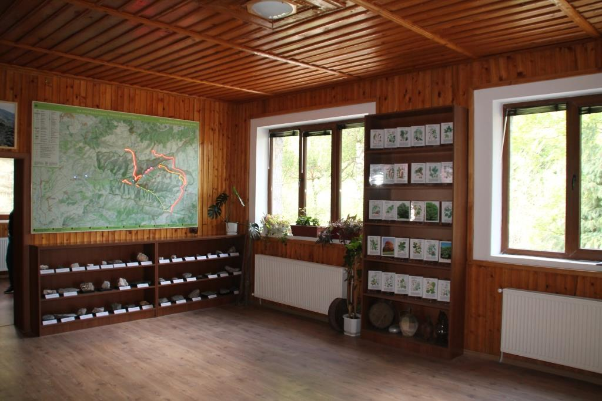
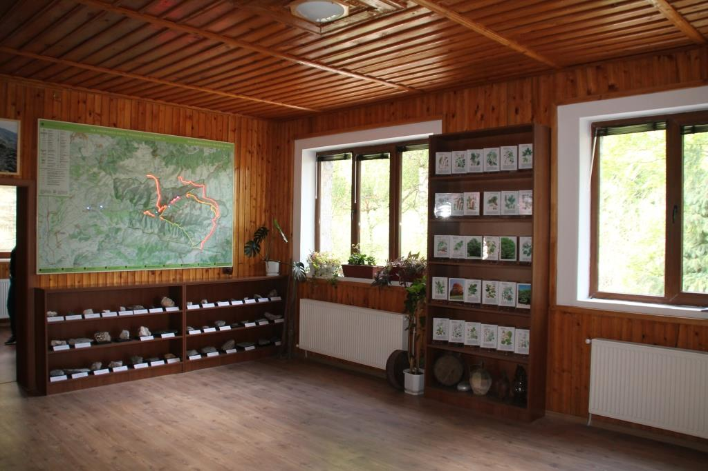

Информация за Центъра
Основни дейности
Центърът предлага различни дейности, включващи постоянни и тематични изложби, интерактивни приложения за екологични практики и обучения, насочени към опазване на биоразнообразието. Освен това се провеждат работни срещи, семинари и екологични стажове.
Тук посетителите могат да научат повече за природата, да се запознаят с маршрутите в парка и да придобият практически умения за опазването на околната среда.
Технически възможности
Центърът разполага с три зали за обучение, всяка с капацитет от 20 места. Те са оборудвани с модерна техника като мултимедийни проектори, интерактивни технологии и флипчартове. Удобствата предоставят възможност за провеждане на разнообразни събития и обучения.
 

Електронен екскурзовод - Cruso
Центърът предлага иновативен електронен екскурзовод, който използва GPS технология за навигация. Уредът предоставя аудио и визуална информация за маршрути и забележителности, като е лесен за използване и подходящ за всякакъв вид туризъм.